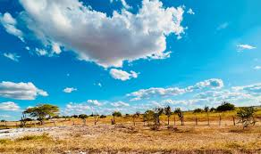

Viagens para a Bahia
Por que viajar para a Bahia?
- 🌴 Praias paradisÃacas – Destinos como Morro de São Paulo, Praia do Forte e Itacaré oferecem paisagens incrÃveis.
- 🏞️ Natureza exuberante – A Chapada Diamantina é um paraÃso para os amantes de trilhas e cachoeiras.
- ğŸ Cultura e história – Salvador, com o Pelourinho e suas festas, é um dos maiores centros culturais do Brasil.
- 🛠Gastronomia – Experimente o acarajé, a moqueca e outros pratos tÃpicos deliciosos.
- ☀️ Clima perfeito – Sol quase o ano todo, ideal para quem ama calor e praias.
